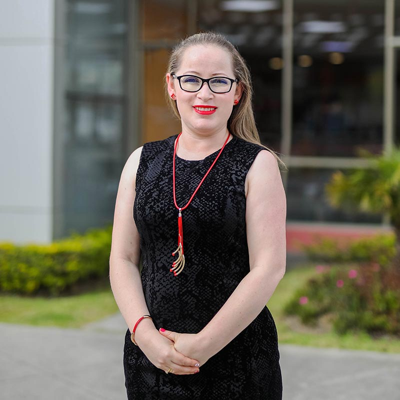

Explotación de medios abiertos para un aprendizaje efectivo.
Campus Universitario UTPL
Auditorio
ORADORES
Mgtr. Roddy Andrés Corre Tenesaca
Máster en Ingeniería de Software y Sistemas Informáticos por la Universidad Internacional de l Rioja (UNIR), España, 2017; Ingeniero en Sistemas Informáticos y Computación por la Universidad Técnica Particular de Loja. Asistente de gestión y administración de servidores en DataCenter UTPL, Administrador Web en UTPL, Desarrollador de Software, Consultor de proyectos Informáticos de software en sector público, Fiscalizador de proyectos de desarrollo de software), Auditor en proyectos de hacking ético orientado a software

Mgtr. Diana Alexandra Torres Guarnizo
Maestría en “Tecnologías Avanzadas de la Web”. Universidad de Alcalá - España. Ingeniera en Sistemas Informáticos y Computación en la Universidad Técnica Particular de Loja, Docente Universitario (Establecimiento UTPL). Experiencia de 15 años en el Departamento de Ciencias de la Computación y Electrónica. Administrador del Sistema de Información Académica y Científica SIAC-UTPL. Analista de Gestión de Información en la Dirección General de Tecnologías de Información y Transformación Digital.
Mgtr. María del Carmen Cabrera Loayza
(Moderadora).
Ingeniera en Sistemas Informáticos y Computación, por la Universidad Técnica Particular de Loja (UTPL), 2007. Tiene un Máster de Investigación en Inteligencia Artificial en la Universidad Politécnica de Madrid, 2016 y actualmente se encuentra cursando el Doctorado en Software, Sistemas y Computación en la misma universidad, 2016. Desde el 2007 es Docente - Investigador a tiempo completo en la UTPL en la Sección de Tecnologías Avanzadas de la Web y Sistemas Basados en el Conocimiento del Departamento de Ciencias de la Computación y Electrónica.
PROGRAMA
Mgtr. Roddy Andrés Corre Tenesaca
Plataformas de Aprendizaje en Línea.
Recursos Educativos Abiertos (OER).
Aprendizaje Colaborativo en Línea
Realidad Virtual (VR) y Realidad Aumentada (AR) en Educación.
 Universidad Técnica Particular de Loja
Universidad Técnica Particular de Loja